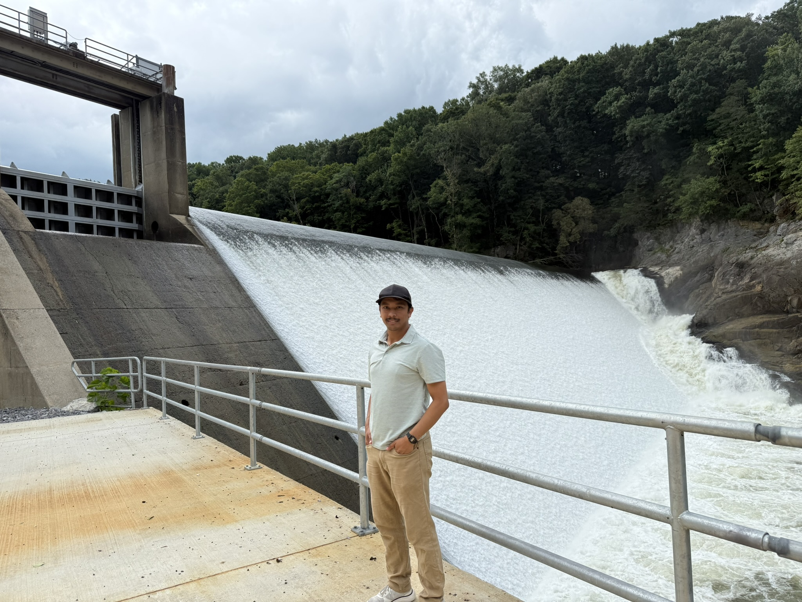
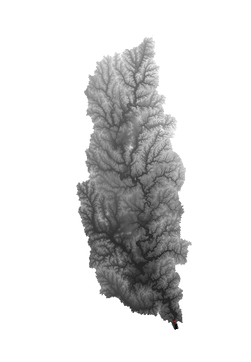
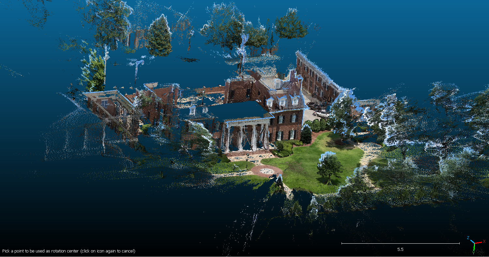

I am a Civil Engineering PhD researcher working at the intersection of flood risk, dam safety, hydraulic engineering, and geospatial data. My research interests include flood mapping, dam-breach assessment, hydraulic modelling, and cost-effective approaches to 3D point-cloud generation.
I am a Civil Engineering PhD researcher currently in my second year at the University of Alabama in Tuscaloosa, USA. My academic work is focused on water-related hazards, with particular interests in flood risk, dam safety, dam-breach assessment, and hydraulic modelling.
Before beginning my doctoral research, I spent more than eight years working as a hydropower design engineer in Nepal. My professional experience includes work on run-of-river hydropower projects ranging from feasibility studies to detailed design.
During my engineering career, I worked on the hydraulic design of weirs, spillways, settling basins, tunnels, and other hydraulic structures. My responsibilities also included hydraulic modelling, preparation of design drawings and technical reports, field investigations, site visits, and construction supervision.
My current research builds on this engineering background while moving toward academic research in dam safety and flood-related hazards. I am also exploring the use of 360-degree cameras and photogrammetry-based workflows to investigate more accessible approaches to generating 3D point clouds for applications such as building documentation.

My research focuses on dam safety, dam-breach assessment, and hydraulic analysis. I am also exploring cost-effective approaches to three-dimensional data acquisition and point-cloud generation using 360-degree cameras.

My current research interests center on dam safety and dam-breach assessment, with an emphasis on understanding potential dam failure scenarios, downstream consequences, and hydraulic processes associated with dam breaches.
This research builds on my professional background in hydropower engineering and hydraulic design, providing a practical engineering perspective on dam safety and risk assessment.

I am exploring cost-effective approaches for generating three-dimensional point clouds using 360-degree cameras, including the GoPro MAX.
The work investigates camera-based photogrammetry workflows for applications such as building documentation and surveying, with an emphasis on accessible alternatives to more expensive data-acquisition methods.
More than eight years of professional experience in hydropower engineering and hydraulic design in Nepal.
Experience across run-of-river hydropower projects, including feasibility studies, detailed design, hydraulic design, hydraulic modelling, preparation of engineering drawings and technical reports, field investigations, and construction supervision.
Design and analysis of weirs, spillways, settling basins, tunnels, and other hydraulic structures, together with site-based engineering and construction support.
Selected peer-reviewed publications and research outputs.
Ashim Rimal, Vishnu Prasad Pandey, Proceedings of 14th IOE Graduate Conference, 2023
View Publication →Ashok Baniya, Ashim Rimal, Chhatra Mani Sharma, Authorea Preprints, 2024.
View Publication →I am interested in research and professional collaborations related to hydraulic engineering, flood risk, dam safety, and related areas of civil and water resources engineering.